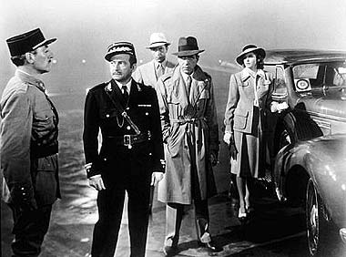
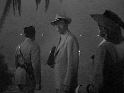
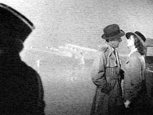
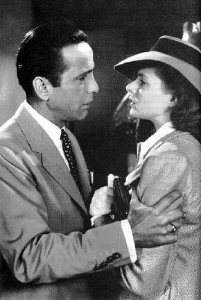
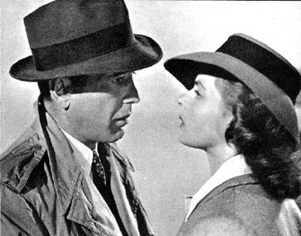

|

Texto de
Susana
Lopes de Alexandria

Título
foi tirado de "Casablanca" (9)
|

|
 Os primeiros a chegar ao aeroporto são Rick, Ilsa, Laszlo e Renault. Renault ordena a um soldado que leve a bagagem de Laszlo até o avião.  Laszlo acompanha o soldado. Enquanto isso, Rick pede a Renault que preencha os documentos de saída e coloque os nomes dos dois passageiros: Victor e Ilsa Laszlo.  Ilsa não entende por que Rick está dizendo o nome dela, já que na noite anterior tinham decidido que apenas Laszlo partiria e ela ficaria com Rick em Casablanca.  Ela se desespera, mas Rick argumenta que o lugar dela é ao lado do marido, que a ama e precisa dela para realizar seu trabalho. Segue-se então o diálogo de onde tiraram o nome deste episódio da Nova Geração.  Rick diz: "Se aquele avião partir e você não estiver nele, vai se arrepender. Talvez não hoje, nem amanhã, mas em breve e para o resto de sua vida". Ilsa pergunta: "E nós?" Rick responde: "Sempre teremos Paris (We'll always have Paris). Nós não tínhamos, havíamos perdido, até você chegar a Casablanca. Recuperamos ontem à noite". Ilsa: "E eu disse que nunca deixaria você". Rick: "E você nunca vai me deixar. Mas tenho um trabalho a fazer também. E aonde vou não posso levá-la. Você não pode participar do que vou fazer. Ilsa, não sou muito bom em ser nobre, mas qualquer um vê que os problemas destas três pessoas não são nada diante deste mundo louco. Um dia você ainda vai entender isso".
Os olhos de Ilsa estão cheios de lágrimas. Laszlo volta e pergunta se está tudo pronto. Rick diz que sim, mas que há uma última coisa que Laszlo precisa saber. Laszlo diz que Rick não lhe deve explicações, mas Rick faz questão de dizer que Ilsa tinha ido ao seu bar na noite passada para pegar os salvo-condutos. Por causa de Laszlo, ela havia mentido, dizendo ainda estar apaixonada por Rick, apenas para conseguir os documentos. Laszlo compreende e dirige-se com a esposa ao avião, que decola em seguida. |